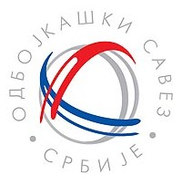

|  | Одбојкашки савез Србије | |
| такмичења | најбољи резултат | |
| Олимпијске игре | првак (1): 2000. године | |
| Светско првенство | 2. место (1): 1998. године | |
| Европско првенство | првак (3): 2001., 2011., 2019. године | |
| Светска лига | првак (1): 2016. године | |
| Светски куп | 3. место(1): 2003. године | |